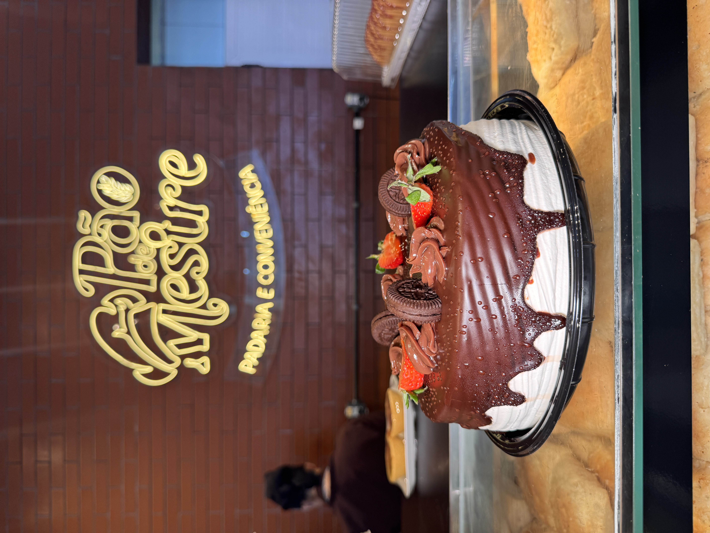
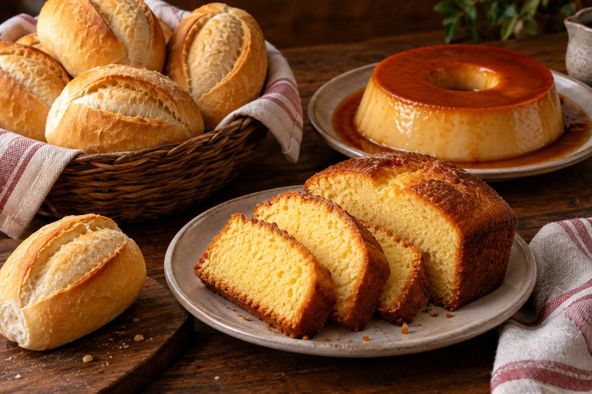
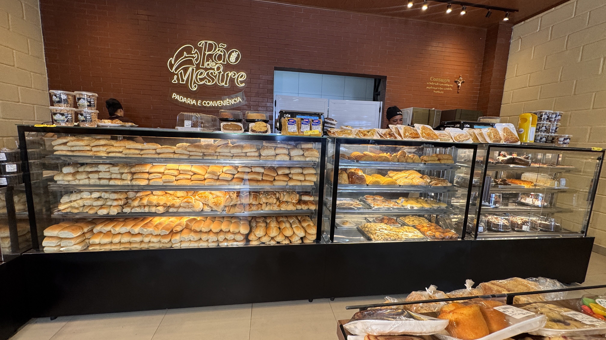
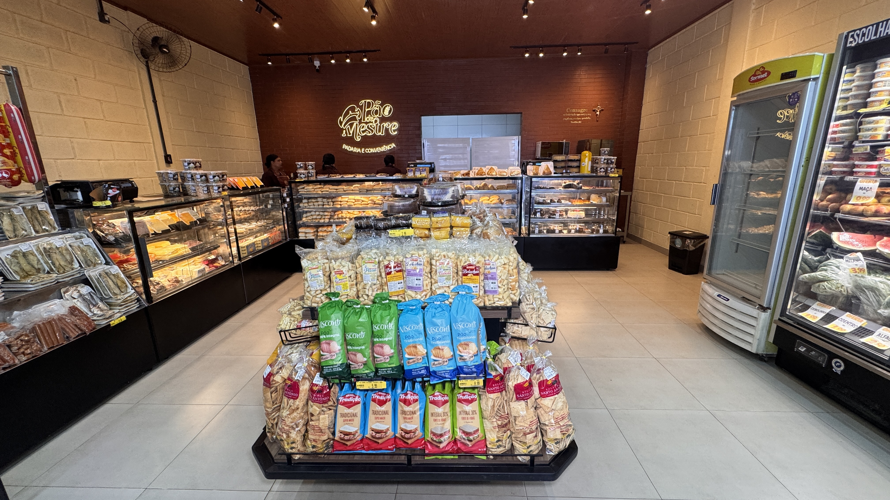

Confeitaria Fina
01 / DOCE
Bolos & pudim
Bolos de diversos sabores e aquele pudim que combina com a sobremesa ou com um carinho no meio do dia.
Uma fatia de felicidade.PADARIA & CONVENIÊNCIA
Um bolo para compartilhar. Um salgado para a pausa. As delícias de padaria que deixam a rotina muito mais gostosa.
Para o café, para o lanche,
para os seus bons momentos.

ESCOLHA O SEU MOMENTO
Do doce ao salgado, encontre um bom motivo
para fazer uma pausa com a Pão de Mestre.

Confeitaria FinaBolos de diversos sabores e aquele pudim que combina com a sobremesa ou com um carinho no meio do dia.
Uma fatia de felicidade.
Fornada do DiaSalgados e comidas de padaria para acompanhar a sua pausa e matar a vontade de comer algo gostoso.
Seu intervalo fica melhor aqui.
PraticidadePraticidade junto com os sabores da padaria. Uma parada para deixar o seu dia mais simples e mais gostoso.
Perto da sua rotina.Consulte os sabores e a disponibilidade pelo nosso Instagram.
NOSSO ESPAÇO & SABORES
MUITO PRAZER, PÃO DE MESTRE
Às vezes, tudo o que a gente precisa é de uma pausa gostosa. Um café acompanhado, um bolo na mesa ou um salgado no caminho.
A Pão de Mestre reúne padaria e conveniência para fazer parte desses momentos, com opções doces e salgadas para diferentes vontades.
Fornadas preparadas continuamente para garantir crocância e maciez.
Receitas que adoçam o seu café e celebram datas importantes.
A CONVERSA CONTINUA POR LÁ
Acompanhe as novidades e consulte os sabores disponíveis no nosso Instagram.
Visite @paodemestreal (abre em nova aba)